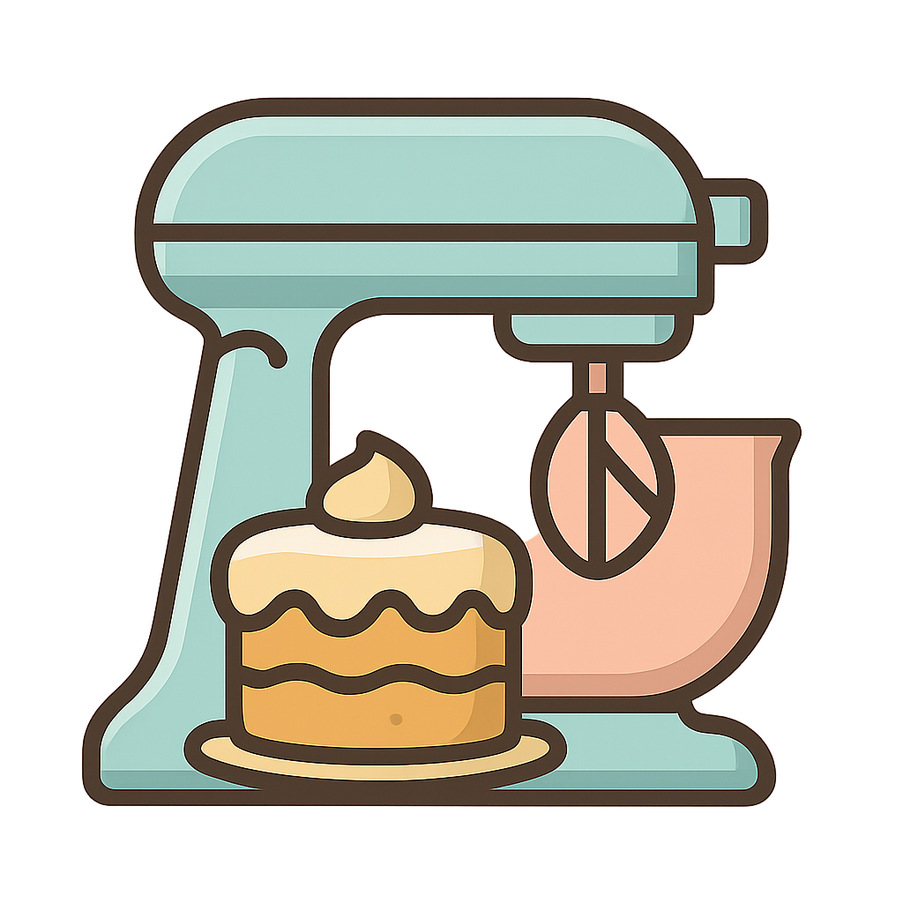
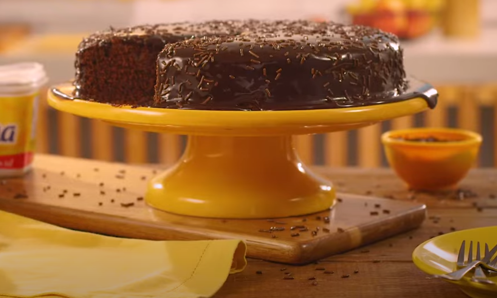
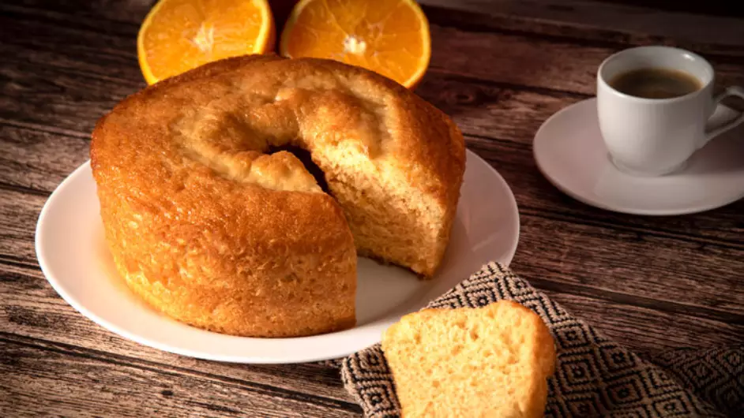

Bem-vindo ao Mundo dos Bolos
Receitas de Bolos
Bolo de Chocolate
Ingredientes:
- 2 xícaras (chá) de farinha de trigo
- 1 xícara (chá) de chocolate em pó
- 2 colheres (chá) de fermento em pó
- 200 g de manteiga
- 2 xícaras (chá) de açúcar
- 4 ovos
- 1 xícara (chá) de leite
Modo de Preparo:
- Preaqueça o forno a 180 ºC e unte a forma com manteiga e chocolate em pó.
- Peneire os ingredientes secos e reserve.
- Bata a manteiga, junte o açúcar e os ovos.
- Acrescente os secos intercalando com o leite.
- Leve ao forno por cerca de 40 minutos.
Bolo de Laranja
Ingredientes:
- 4 ovos grandes
- 2 laranjas (chá) de chocolate em pó
- 1 xícara (chá) de óleo (chá) de fermento em pó
- 2 xícaras de farinha de trigo
- 1 xícara de açúcar
- Raspas de laranja
Modo de Preparo:
- No liquidificador, bata os ovos, o suco de laranja e o óleo até obter uma mistura homogênea.
- Adicione o açúcar e a farinha de trigo e misture novamente até que todos os ingredientes estejam bem incorporados.
- Por último, adicione o fermento em pó e mexa delicadamente por alguns instantes
- Despeje a massa em uma forma com furo central previamente untada e enfarinhada.
- Asse em forno médio preaquecido a 180°C por cerca de 40 minutos ou até que esteja dourado e assado por completo
- Retire do forno e deixe esfriar antes de desenformar e servir seu bolo de laranja fofinho e saboroso
- 2 xícaras de chá de fubá
- 1 xícara de chá de farinha de trigo
- 1 colher de sopa de fermento em pó
- 3 ovos
- 1 xícara de chá de leite
- 1 xícara de chá de óleo
- 2 xícaras de chá de açúcar
- Com auxílio de uma peneira, coloque 2 xícaras de chá de fubá, 1 xícara de chá de farinha de trigo e 1 colher de sopa de fermento em pó em um recipiente. Misture e reserve.
- No liquidificador, coloque 3 ovos, 1 xícara de chá de leite, 1 xícara de chá de óleo e 2 xícaras de chá de açúcar. Bata até ficar homogêneo.
- Junte a mistura do liquidificador com os ingredientes peneirados e misture.
- Transfira a massa para uma forma untada com manteiga e polvilhada com fubá.
- Leve para assar em forno preaquecido a 180 graus Celsius por 30 minutos.
- 3 cenouras médias, descascadas e picadas em rodelas
- 1/2 xícara de óleo
- 3 ovos
- 2 xícaras de açúcar
- 2 xícaras de farinha de trigo
- 1 colher de sopa de fermento em pó
- 1 pitada de sal
- 1/2 xícara de leite
- 2 colheres de sopa de manteiga
- 4 colheres de sopa de achocolatado em pó
- 1 xícara de açúcar
- No liquidificador, coloque as cenouras picadas, o óleo e os ovos. Bata bem até que a mistura fique homogênea, com uma textura líquida e sem pedaços grandes de cenoura.
- Adicione o açúcar e bata novamente até que a mistura esteja bem misturada.
- Em seguida, adicione a farinha de trigo, o sal e o fermento em pó. Bata no liquidificador por alguns segundos apenas para incorporar os ingredientes. Não bata demais, para não perder a leveza da massa.
- Antes de colocar o bolo no forno, preaqueça-o a 180°C por cerca de 10 minutos.
- Despeje a massa do bolo na forma untada e leve ao forno preaquecido. Asse por cerca de 40 a 45 minutos ou até que, ao espetar um palito no centro do bolo, ele saia limpo.
- 2 e 1/2 xícaras de farinha de trigo
- 1 pacote de coco ralado
- 200 ml de leite
- 1 colher (sopa) de fermento
- 2 xícaras de açúcar refinado
- 3 colheres de margarina
- 4 ovos
- 1 pitada de sal
- Bata as claras em neve e reserve.
- Em uma batedeira, misture o açúcar, as gemas e a margarina por 3 minutos.
- Em seguida, acrescente o leite, a farinha, o coco ralado, uma pitada de sal e continue batendo.
- Desligue a batedeira e acrescente as claras em neve e o fermento.
- Misture manualmente.
- Coloque a massa em um assadeira untada com manteiga e leve ao forno preaquecido a 210° C por 30 minutos.
Bolo de Fubá

Ingredientes:
Modo de Preparo:
Bolo de Cenoura